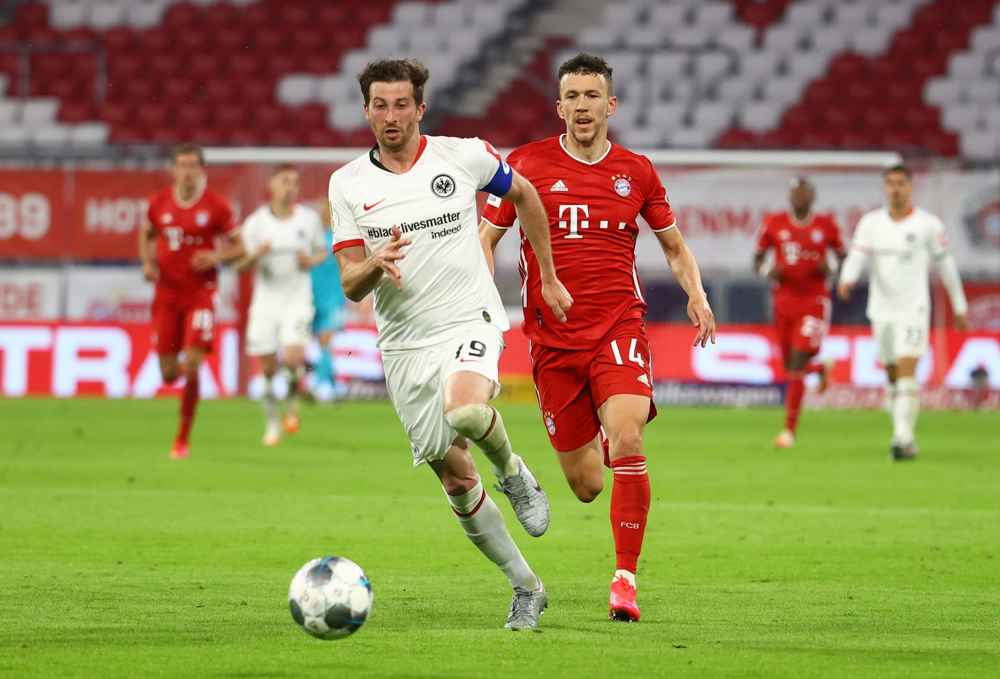

Final Score: FC Bayern Munchen 5 - 2 Eintracht Frankfurt
Bayern Munich pulls off an important victory at the expense of a sinking Eintracht Frankfurt, with the Austrian defender Martin Hinteregger getting an interesting hattrick of goals as he features on both sides of the scoresheet. Here are five key takeaways from today’s exciting match:
1. Hansi Flick’s Bayern Continues Their Record-Breaking Run
Since the sacking of Niko Kovac after the disastrous reverse fixture, Hansi Flick’s interim period at Bayern proved to be too good to turn down. Since Bayern appointed Flick as the full-time manager, he hasn’t shown any signs of slowing down nor that a “honeymoon” period has ended as did with Solskjaer’s Manchester United side, someone he was compared to earlier this season. He has proven himself to be worthy of being Die Roten’s manager, having collected 43 out of a possible 51 points, with an average of over 3 goals per game. This is incredible, even by Bayern’s lofty standards, and he had an impeccable Champions League record to go with it until soccer stopped abruptly due to COVID-19.
Bayern is on course to win a record-breaking 8th consecutive league title, and even with Der Klassiker coming up this Tuesday, they are still 4 points ahead of second-place Dortmund. This hot run of form brings back fresh memories from the golden days of Pep Guardiola, however, it looks even better. With Pep bringing his own philosophy to Munich, despite the success, he was often viewed as unfit for Die Roten. But Flick, on the other hand, staying true to Bayern’s high-pressing style of play, might be the best thing that has happened to the club since the Champions League triumph of 2013. Reviving the club’s Bavarian identity, bringing the local hero Müller back into the limelight, fighting with the not-so-popular sporting director over his demands, he has already established himself as a firm fan favorite. With a Bundesliga title under his belt, he would be untouchable, and that is looking like a pretty likely scenario.
2. Bayern’s Defense, can They Stop the Likes of Haaland and Sancho on Tuesday?
Apart from the two goals conceded from corners, Bayern’s defense was absolutely world-class today. Neuer, who finally signed a contract extension earlier this week, proved today why he is still one of the world’s best keepers. Alexander Nubel will still face fierce competition for the first-team spot when he comes in next season. With the number of key saves he made today, and his quality in possession - reminding us of his 2014 World Cup-winning season - it is clear that Nubel would be learning from the best next season.
With the re-emergence of Boateng in recent matches, his key tackle prevented an amazing counter-attack in this first half, as a result, newcomer Lucas Hernandez will be pushed further down the pecking order. Flick has also discovered Alaba’s center-back talents and Bayern’s heart looks stronger than ever. With Davies experiencing an amazing breakthrough season, and Pavard proving himself to be best at right-back, Bayern’s defense is one of the best in Europe. However even with this amount of talent, they struggled to defend set-plays from Frankfurt. However strong the zonal marking might be, a team still needs to go out and prevent players like Hinteregger from making a run and scoring headers. Bayern fell victim to this twice today and need to make sure it doesn’t happen again on Tuesday, as Erling Braut Haland will be there to capitalize on those chances.
